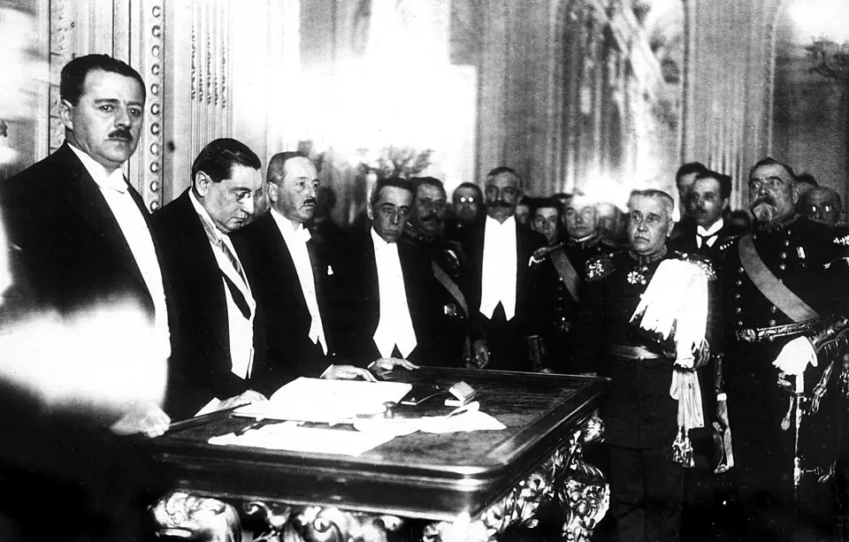

Constitución de 1925

La Constitución de 1925 nació de la crisis del régimen parlamentario. Tras el "ruido de sables" de 1924 y la salida del país de Arturo Alessandri, este regresó en 1925 y encargó un nuevo texto a una comisión consultiva, en la que tuvo un papel central el ministro José Maza. Fue aprobada en un plebiscito el 30 de agosto y promulgada el 18 de septiembre de 1925 en Santiago. Estableció un régimen presidencial: el presidente sería elegido por votación directa por seis años, sin reelección inmediata, y los ministros dejaron de depender de la confianza del Congreso. Separó la Iglesia del Estado, creó el Tribunal Calificador de Elecciones, reconoció la protección al trabajo y la previsión social, y sujetó la propiedad a las limitaciones que exigiera el progreso social. Su aplicación plena se postergó hasta 1932, tras años de inestabilidad. Su legitimidad de origen ha sido discutida, porque fue redactada por una comisión designada y el plebiscito tuvo baja participación. Aun así, dio forma a la República Presidencial y rigió la vida política chilena hasta 1973.
Versión para niños
Una Constitución es la ley más importante de un país: explica cómo se organiza y cuáles son los derechos de las personas. En 1925, el presidente Arturo Alessandri impulsó una nueva Constitución para Chile. Con ella, el presidente pasó a tener más poder que el Congreso y comenzó a ser elegido directamente por los votantes. Además, la Iglesia y el Estado se separaron. Esta Constitución rigió en Chile durante casi cincuenta años.
Para maestros
Nivel sugerido: 2° medio
Objetivo: Comprender el paso del régimen parlamentario al presidencial y los principales cambios que introdujo la Constitución de 1925.
Preguntas para la clase:
- ¿Qué problemas del régimen parlamentario buscaba resolver la nueva Constitución?
- ¿Por qué fue importante la separación de la Iglesia y el Estado?
- ¿Qué significa que una Constitución tenga "legitimidad de origen"?
Actividad (20–30 min): En grupos, los estudiantes comparan en una tabla la Constitución de 1833 y la de 1925 en tres aspectos: elección del presidente, relación entre el Ejecutivo y el Congreso, y relación con la Iglesia. Cierran con una conclusión común sobre qué cambió y qué se mantuvo.
Fuentes sugeridas: Biblioteca del Congreso Nacional (BCN); Memoria Chilena; Biblioteca Nacional Digital.
Objetivos de Aprendizaje (Currículum Nacional)
- 6° básico · HI06 OA 16 Reconocer que la Constitución Política de Chile establece la organización política del país y garantiza los derechos y las libertades de las personas
- 2° medio · HI2M OA 05 Analizar la crisis del sistema político del periodo parlamentario y la posterior reconstrucción de la institucionalidad por medio de la Constitución de 1925
- 2° medio · HI2M OA 23 Explicar los elementos que constituyen un Estado de derecho, como la Constitución … y debatir sobre su perfeccionamiento, defensa y riesgos a los que está expuesto
Personajes
Revisión humana pendiente. Cómo se revisa · Reportar un error
Cómo citar: Historia de Chile. (2026). Constitución de 1925. En Historia de Chile: atlas y línea de tiempo. https://moises-salgado.github.io/historia-de-chile/momento/constitucion-de-1925.html